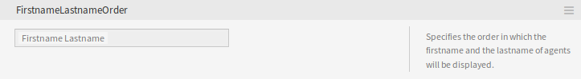
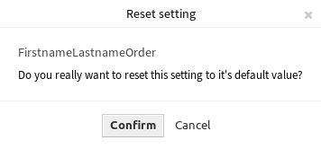

系统配置¶
现代系统有许多方法来配置他们的行为。 一些使用在命令行上编辑的配置文件，一些使用图形界面（并在后台将信息保存到配置文件），而另一些则使用数据库。 保持变更和审计有时可能是一个问题，因为并不总是清楚谁做出了修改。 进行批量修改并非总是可行，而回滚是一件苦差事。
OTRS使用舒适的图形界面来配置系统。 对默认系统配置的所有更改都存储在数据库中，并且可以进行审计（谁在何时更改了设置、原值和新值是什么），并在配置错误的情况下回滚到先前的状态。
舒适的搜索功能可以快速、轻松地找到所需的设置。
参见
通过使用 系统配置历史 软件包，您可以轻松地回滚用户所做的更改。请联系 sales@otrs.com 以将此功能添加到您的系统中。
使用此屏幕可管理系统配置设置。 OTRS带来了大约2200个配置设置。 系统配置管理屏幕位于 系统管理 组的 系统配置 模块中。
管理系统配置¶
注解
出于安全原因，无法在系统配置的图形用户界面中更改数据库连接的配置设置。 这些必须在 Kernel/Config.pm 中手动设置。
要修改系统配置，您需要执行几个步骤。 以下示例显示了如何查找、修改、部署和重置系统配置 FirstnameLastnameOrder。
通过在搜索框中输入搜索词
lastname来查找系统配置。通过全文搜索，可以扫描所有配置设置以查找一个或多个关键字。 全文搜索不仅搜索配置设置的名称，还搜索描述和值，这样即使不知道名称，也可以轻松找到某个元素。

系统配置 - 搜索设置
从搜索结果中选择设置。
系统配置 - 找到设置
点击小部件的标题以查看选项。

系统配置 - 展开设置
将鼠标悬停在小部件主体上以查看 编辑这个设置 按钮。

系统配置 - 悬停在设置上
点击 编辑这个设置 按钮以激活编辑模式。 在编辑模式下，小部件在左侧获得橙色边框。
注解
如果某个设置当前由另一个管理员编辑，则在另一个管理员完成其工作之前，无法访问该设置的编辑模式。

系统配置 - 点击设置
更改设置的值。 单击右侧的 取消 按钮或按键盘上的 Esc 键可取消编辑。 取消编辑后，将丢弃当前编辑会话期间所做的所有更改。

系统配置 - 修改设置
点击 保存 按钮。 如果保存了修改，则窗口小部件在左侧获得绿色边框。

系统配置 - 保存设置
返回并点击左侧边栏中的 部署 按钮。 您还会在通知栏中收到通知，告知您没有部署的设置。

系统配置 - 设置更改情况
查看更改情况。
您可以单击右上角的⇄按钮并排比较更改内容。

系统配置 - 设置差异情况
- 点击 部署所选更改 按钮。 如果更改了多个设置，则可以仅部署所选设置。
- 添加部署注释，为其他管理员解释更改内容以及原因。 在这里使用完整句子。

系统配置 - 部署设置
- 返回并再次搜索术语
lastname以查找修改后的设置。 窗口小部件在左侧有一个灰色边框，表示此设置已被修改。

系统配置 - 已部署设置
- 要重置设置，请单击窗口小部件的标题以查看选项。 然后点击 重置设置 按钮。
系统配置 - 重置设置
- 点击 确认 按钮。
- 部署设置。
使用导航树¶
每个配置设置按类别和导航组分类。 导航组是主导航树中的单个元素。 通过选择其中一个导航条目，将显示分配给所选组的所有设置。 如果没有安装扩展，类别选择就会自动隐藏，但只要安装了带有自己的配置设置（例如ITSM模块或调查模块）的软件包，就会显示类别选择。 选择类别使主导航树仅显示属于所选类别的导航组。

系统配置导航树
要展开一个元素，请点击它旁边的箭头。 括号之间的数字表示该元素有多少个设置。 如果某个元素没有数字，则此元素仅是类别，它没有设置，只有子类别。
使用导航树的结果与搜索设置相同。 如果您想查看一个设置属于哪个组，请通过单击窗口小部件的标题展开它。
系统配置 - 展开设置
例如，FirstnameLastnameOrder 可以在 Frontend → Base 中找到。
导入和导出系统配置¶
点击左侧边栏中的 导入和导出 按钮以访问导入导出屏幕。

系统配置 - 导入和导出
若要导出系统配置：
- 点击 导出 小部件中的 导出当前配置 按钮。
- 将
Export_Current_System_Configuration.yml文件保存到本地文件系统。 - 将文件重命名为更具描述性的名称。
若要导入系统配置：
- 点击 导入 小部件中的 浏览… 按钮。
- 选择一个先前导出的
.yml文件。 - 点击 导入系统配置 按钮。